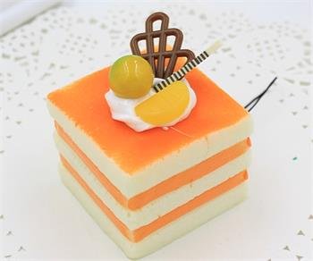

Butter Cakes

Butter cakes should have a golden brown, tender, thin crust. The inside or crumb of the cake should be fine, free of tunnels, and moist. Color will vary depending on the type of cake.
Foam Cakes
Foam cakes are leavened with air that is trapped in beaten egg bubbles, or foam. Sponge or chiffon cakes contain some shortening. Angel food cake is a foam cake that contains no shortening. All should have an even grain and be moist.
Cookies
Cookies are most commonly baked until crisp or just long enough that they remain soft, but some kinds of cookies are not baked at all. Cookies are made in a wide variety of styles, using an array of ingredients including sugars, spices, chocolate, butter, peanut butter, nuts or dried fruits. The softness of the cookie may depend on how long it is baked.
A general theory of cookies may be formulated this way. Despite its descent from cakes and other sweetened breads, the cookie in almost all its forms has abandoned water as a medium for cohesion. Water in cakes serves to make the base (in the case of cakes called "batter" as thin as possible, which allows the bubbles – responsible for a cake's fluffiness – to form better. In the cookie, the agent of cohesion has become some form of oil. Oils, whether they be in the form of butter, egg yolks, vegetable oils or lard are much more viscous than water and evaporate freely at a much higher temperature than water. Thus a cake made with butter or eggs instead of water is far denser after removal from the oven.